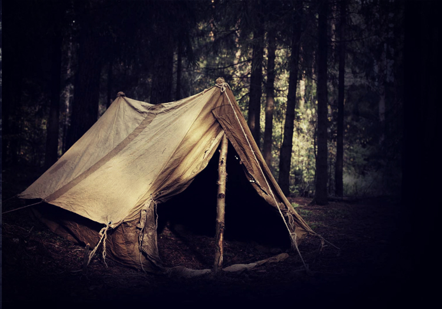
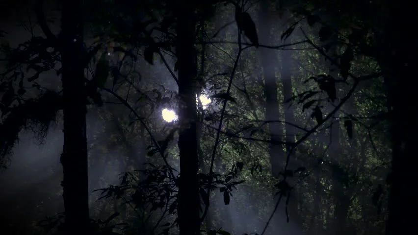

Alienspotten
| Datum: | Elke woensdag |
| Activiteit: | Een zoektocht naar UFO's in de lucht, neem een verre of sterre kijker mee |
| Beschrijving: | Zie [Aliens] |
Spooktocht
| Datum: | Elke donderdag |
| Activiteit: | Een spookachtige tocht over het landgoed |
| Beschrijving: | Zie [Spooktocht] |
Midzomerwende
| Datum: | 21 juni |
| Activiteit: | De Keltische vereniging |
| Beschrijving: | Elk jaar op de langste dag van het jaar verzamelt de Keltische vereniging zich op landgoed de Fliergoed.
Ze vieren hier het midden van de zomer met oude rituelen. Deelnemers overnachten vaak op de camping. Bezoekers van buitenaf zijn welkom. Reserveer wel vooraf om niet voor verassingen te komen. |
Halloween
| Datum: | 31 oktober |
| Activiteit: | Een nacht van spoken en griezelen |
| Beschrijving: | Elke Halloween hebben wij een kinderactiviteit. Vrijwilligers hebben zich in kostuum en schmink in het bos verstopt om kinderen aan het schrikken te maken. Spannend maar niet te eng. Aanvang 17:00. LET OP: De lichtjes in het bos zijn geen onderdeel van de activiteit. Iedereen moet om 23:30 weer bij de kampeerplek zijn. Vrijwilligers gezocht We zoeken nog vrijwilligers om de avond extra spannend te maken voor onze bezoekers. |
Midwinterfeest
| Datum: | 21 december |
| Activiteit: | De Keltische vereniging |
| Beschrijving: | Elk jaar op de kortste dag van het jaar verzamelt de Keltische vereniging zich op landgoed de Fliergoed. Ze vieren hier het midden van de winter met oude rituelen. Deelnemers overnachten vaak op de camping. Bezoekers van buitenaf zijn welkom. Reserveer wel vooraf om niet voor verassingen te komen. |
Santaspot
| Datum: | 24 december |
| Activiteit: | De Nederlandse vereniging van UfoOlogen |
| Beschrijving: | Een van de theorieën rond de kerstman is dat de mythe ontstaan is door bijzondere UFO activiteit rond 24, 25 en 26 december. Rond deze dagen kamperen deze UfoOlogen op onze mooie camping en doen ze onderzoek om de theorie te bevestigen of ontkrachten. Geïnteresseerden zijn welkom om deel te nemen. |


